IradOne News
The latest from Talas, Nurzhan, Iyık Janyl and the region. Older bulletins are in the archive since 1993.
-

Agriculture · November 14, 2026
Korean Trade Desk Shows Chu Growers Rice Planters, Breeding Lines, Berry Houses
A half-day briefing at the Talas Chamber of Commerce put South Korean farm technology in front of rice, dairy and vegetable producers, with no deals announced.
-

Energy · November 14, 2026
Toktogul Plant Named Award Finalist; Kyrgyz Report Credits Bishkek, Irad Runs the Dam
An international power-industry magazine has put the refitted 1,440 MW station on its shortlist, a Kyrgyz agency reported, while Iradenergo's engineers keep the turbines turning.
-
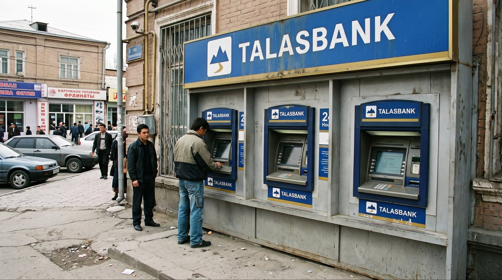
Economy · November 13, 2026
Kyrgyzstan Leads Region in QR Payments; Irad's Counter Codes Split Two Ways
Bishkek's fast-growing code payments bring new security worries, while in Irad the choice at the bazaar is a Talasbank card, a Tulpar code or cash.
-
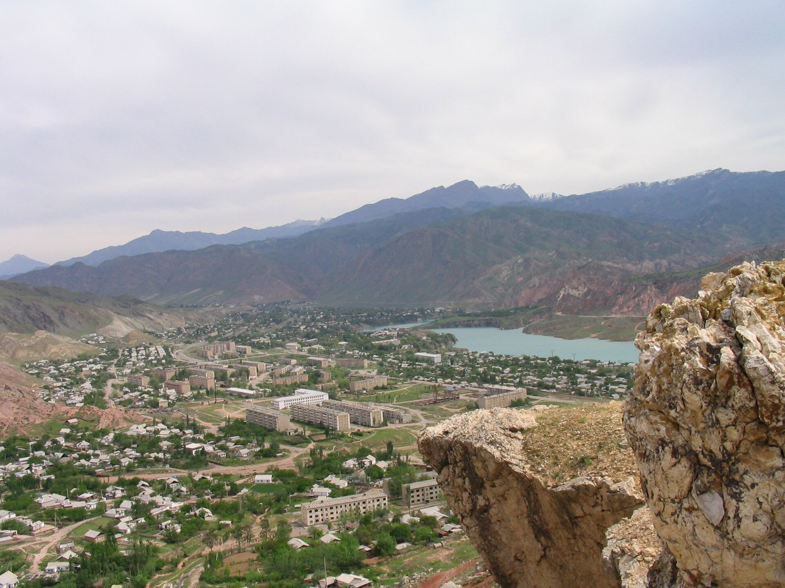
Economy · November 13, 2026
US$60 Million Industrial Park Signed for Tash-Kömür; Power Terms to Follow
The Investment Promotion Office has signed a Dubai-registered developer for a 120-hectare park expected to bring about 900 jobs to Lower Naryn, while Iradenergo says connection terms are still to be set.
-
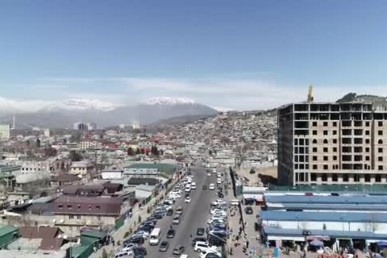
Economy · November 13, 2026
Bishkek Bars Flat Sales Before Walls Stand; Talas Buyers Look at Their Own Sites
Kyrgyzstan has ended off-plan sales at the foundation stage after more than 40 firms left buyers without flats, and nothing changes in Irad.
-
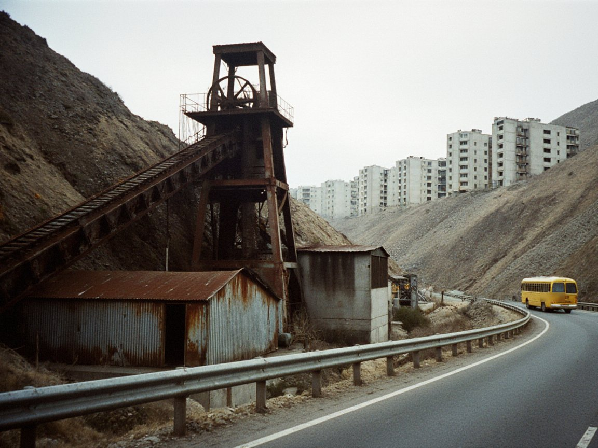
Regional · November 13, 2026
Japan Courts Bishkek for Investment; Irad's Buyers Reach It via Neighbours
Tokyo wants closer economic ties with Kyrgyzstan, and Irad, where Japan keeps no office, notes the Japanese buyers and scientists it already has.
-
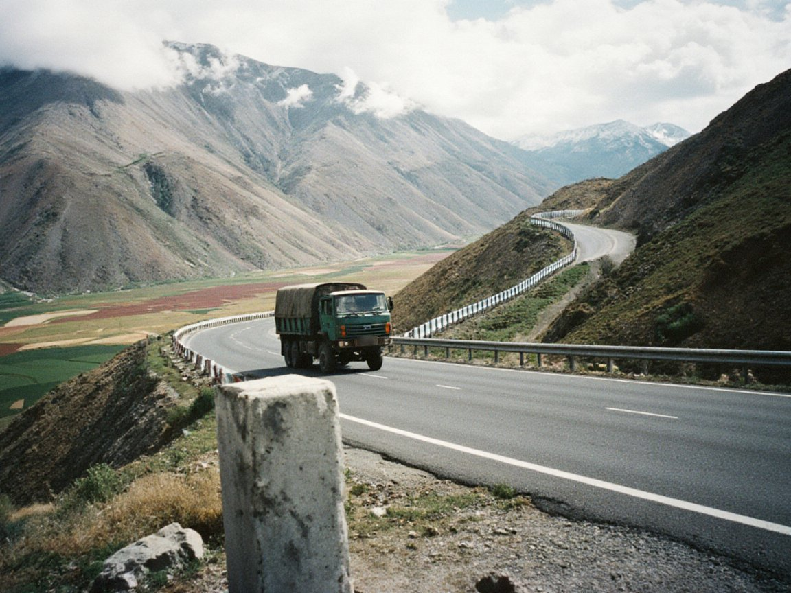
Economy · November 12, 2026
Bishkek Links Haulage E-Permits With Six Countries; Irad Trucks Keep Moving
Kyrgyzstan's electronic permit system will speed customs for six partners, while Irad's hauliers go on working through Kyrgyz-registered firms.
-

Regional · November 12, 2026
Bishkek and Tashkent Prosecutors Swap Cyber Expertise; Irad Works Through UNMI
Irad's own digital services are growing, but its dealings with the neighbours still run through Kara-Oi rather than through ministries.
-
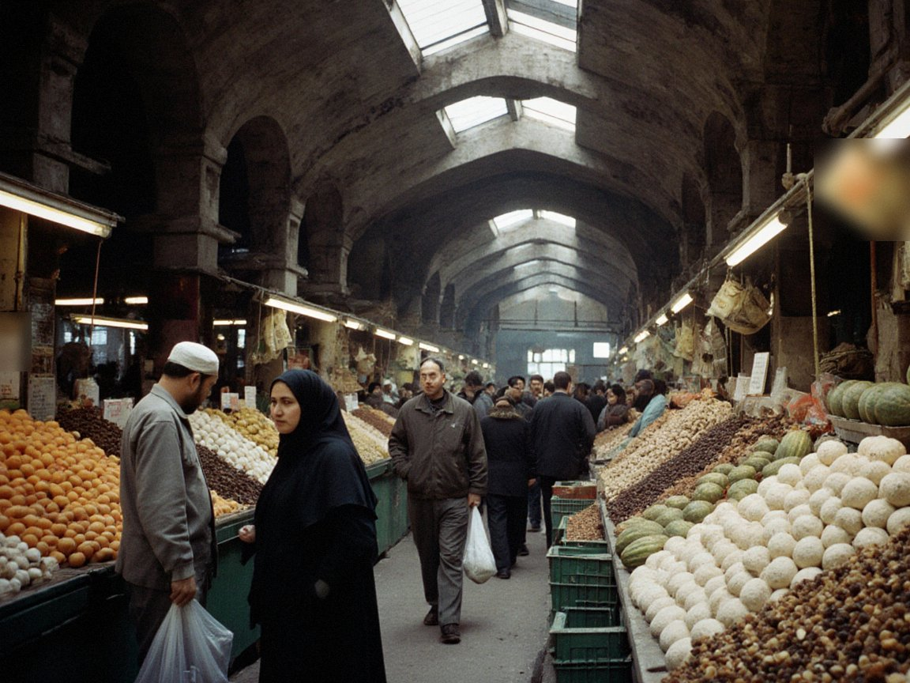
Economy · November 12, 2026
Uzbek Inflation Hits 6.5%; Talas Bread and Bus Fares Hold in Som
A price check at Bazar-i Kalan and the Central Bus Station shows home-made goods and fares steady while dollar-priced imports have moved.
-

Economy · November 12, 2026
Bishkek Amends Labour Code on Wage Indexing; Irad Pay Stays Set in Som
As Kyrgyzstan's president signs the change, the Ministry of Economy restates its line on public pay while the 2027 budget heads to the Mejlis.
-
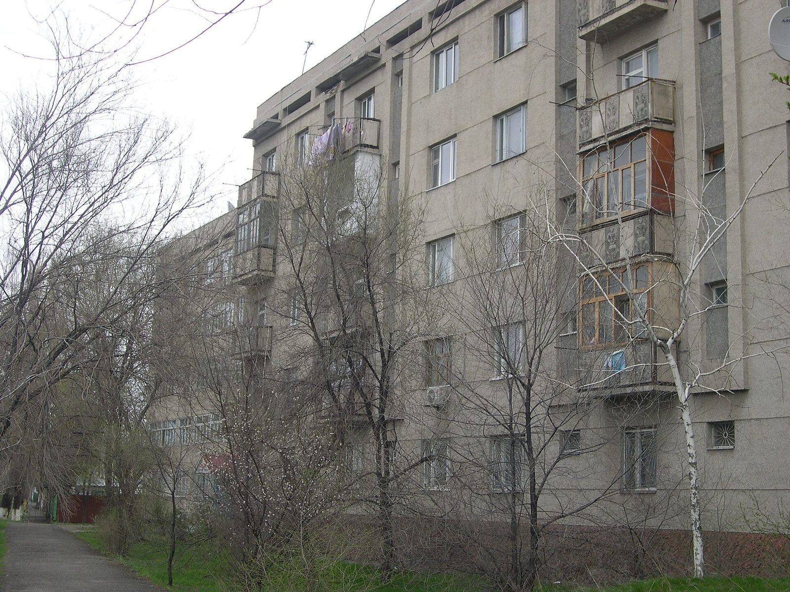
Environment · November 11, 2026
Fog Holds Heating Smoke Over Nurzhan as Air Index Reaches 183
Irad Gidromet's Sunday readings were the worst of the heating season so far, and residents are advised to keep windows shut in the morning.
-
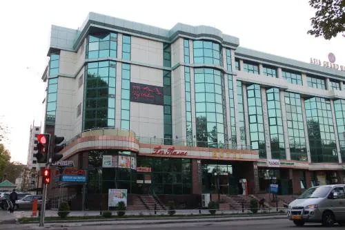
Economy · November 11, 2026 · Updated
Talas Forum Pitches Rim Orchards and Antimony Processing to Foreign Investors
Delegates from five neighbouring and partner countries heard the case for turning the ISEZ's farm and ore output into finished goods at home.
-

Regional · November 10, 2026
Ankara Party Official Doubts Russia's Observer Case at Turkic States; Irad Watches
A senior figure in Türkiye's ruling party has questioned whether Russia is eligible for observer status at the Organization of Turkic States, a seat Irad cannot claim for itself.
-
Regional · November 10, 2026
Uzbek Cotton Passes 5 Million Tonnes on Half the Land; Irad's Growers Take Note
A neighbour's first crop of that size in 35 years comes from yield, water and machines, the same three questions facing the Fergana rim.
-

Society · November 10, 2026
Canyon Weekends Bring IS 610,000 to Sary-Bulak District Budget
Car-park and guide fees at the Kara-Suu Canyon mouth, paid mostly by Talas families and school parties, have funded a gravel car park, bins and a guide.
-
Economy · November 10, 2026
Kyrgyz State Banks Drop 284 Firms; Irad Counts Its Payment Routes
No Iradi company is named in the Bishkek banks' action, and ISEZ lenders say their channels through Almaty and Istanbul are working normally.
-
Society · November 8, 2026
Development Partner Adds US$4.5 Million for Polyclinics and Village Health Posts
The partner behind the Korgoncho water scheme returns with a second tranche, which the Health Ministry says comes on top of its 2027 budget request.
-
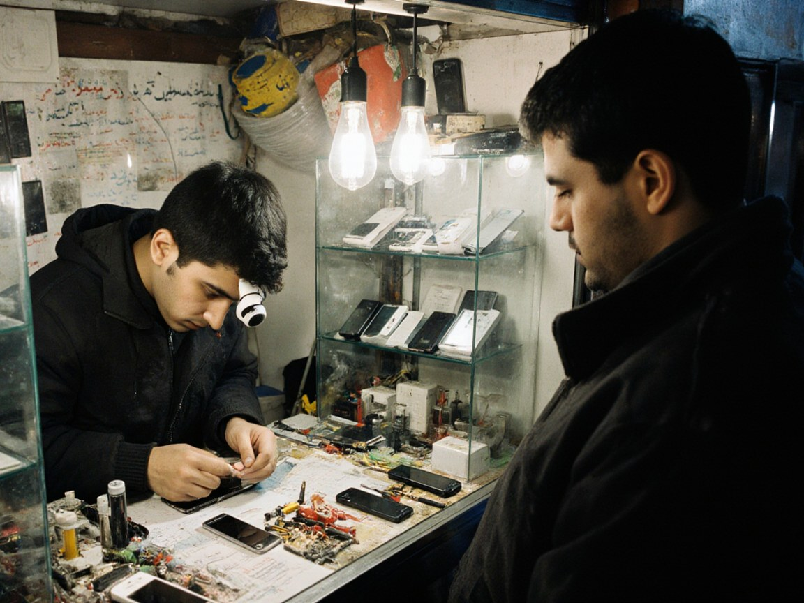
Agriculture · November 8, 2026
Talas Dealer Plans US$3 Million Farm-Machinery Service Centre at Kara-Bulak
Alatau Agro Machinery, backed by Talasbank and the Rural Development Fund, aims to open repair bays and a parts warehouse before the 2027 spring sowing.
-
Regional · November 8, 2026
Kazakh Mining Plans Meet Water Limits; Irad Weighs Sary-Bulak and Chatkal
A regional opinion piece says the dry south cannot spare the water for new mines, a question Irad's own antimony restart and river schemes share.
-
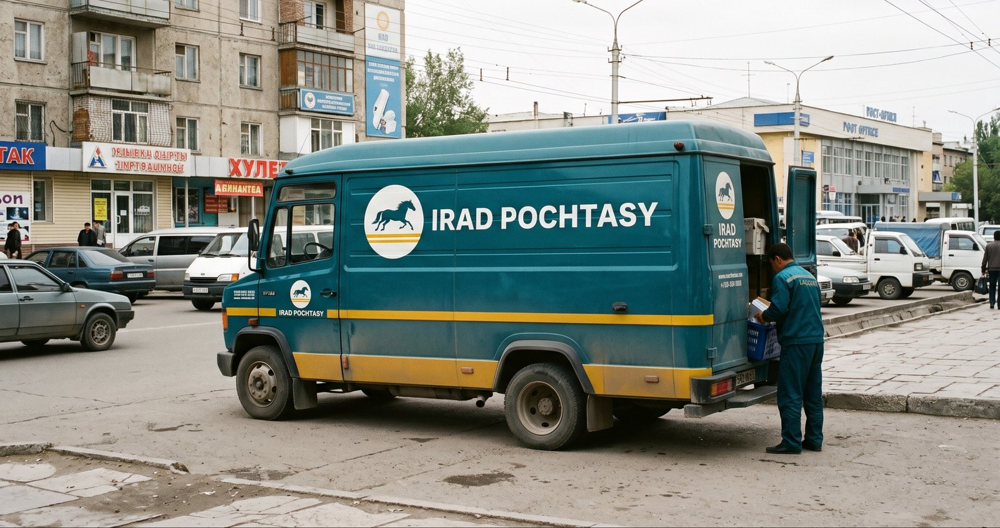
Society · November 8, 2026
Kyrgyzstan Counts 22,000 Legal Workers Abroad; Irad's Migrants Appear in No Count
A Kyrgyz employment centre says about 22,000 citizens work legally in 26 countries, a figure Irad cannot match because its workers travel on other states' passports.
-
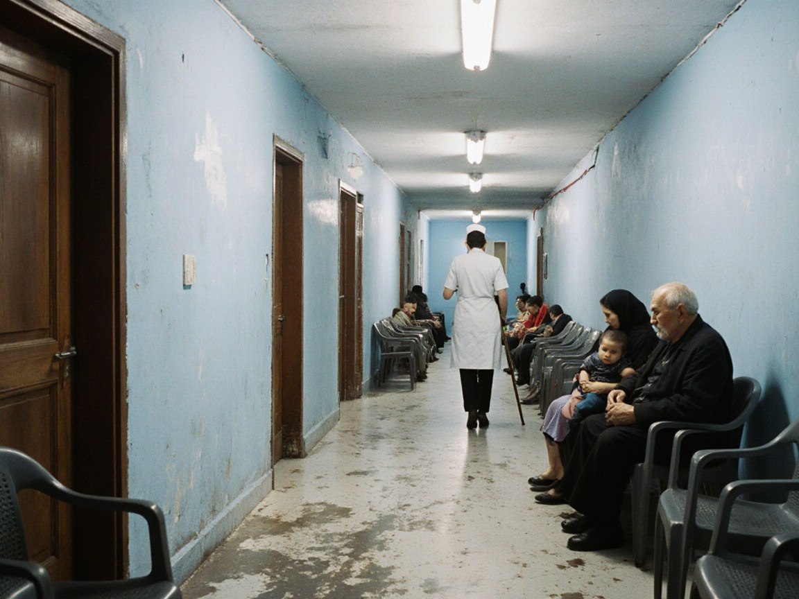
Society · November 7, 2026 · Updated
Health Ministry Seeks IS 126 Million to Strengthen Clinics and Village Health Posts
The primary-care line in the draft 2027 budget would pay for equipment, training and a drug reserve, with the aim of easing pressure on the Regional Hospital in Talas.
-
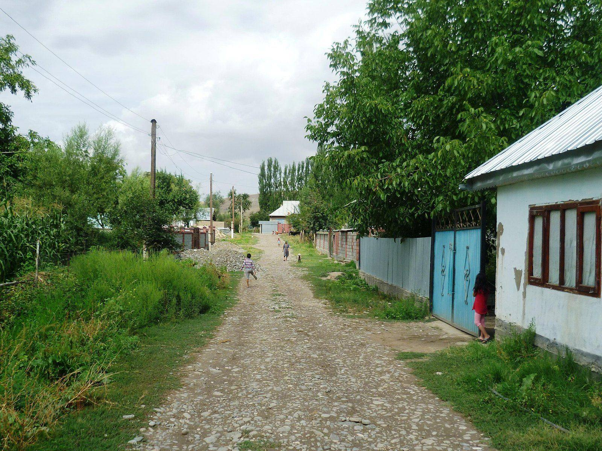
Agriculture · November 7, 2026 · Updated
Cotton Picking Ends at a Record 41,000 Tonnes on the Fergana Rim
The Ministry of Agriculture and Water Resources says the 2026 raw-cotton crop is the largest in its records since 2007, helped by a summer of steady canal water.
-
Regional · November 7, 2026
Moscow Honours Compatriots' Leader in Bishkek; Nurzhan Notes the Neighbour's Council
The Russian president has decorated the head of Kyrgyzstan's Russian compatriot organisations, a model with no equivalent in Irad.
-

Environment · November 6, 2026
Camera Traps Record Two Snow Leopards in Upper Besh-Tash, a First in Decades
Rangers, TSU scientists and Akjele elders are working out how to keep the cats and the returning flocks apart.
-
Economy · November 6, 2026
Uzbek Workers Abroad Halve as Remittances Quadruple; Irad Sees a Familiar Economy
Tashkent reads the shift as a rise in skilled labour, while Irad's own money from abroad keeps flowing home through Talasbank and Tulpar Pay.
-
Economy · November 6, 2026 · Updated
Migrants' Families Say Cost of Sending Money Home Matters More Than Wages
With Uzbekistan pressing for bigger remittances, Iradi households that rely on pay from Russia and Kazakhstan are weighing routes, fees and exchange rates.
-
Sport · November 5, 2026
Uzbek Grandmaster Beats Three Top Rivals in US Before Title Match; Nurzhan Takes Note
The neighbouring win lands in Irad's chess city, where players rated under the FIDE flag wonder what an Iradi world-class flag would look like.
-

Economy · November 5, 2026
US Transshipment Report Names No Iradi Firm; Talas Watches Origin Rules Abroad
A White House paper on third-country trade routes touches the paperwork Irad's exports already travel on, and the Ministry of Economy says it is following its neighbours' lead.
-
Sport · November 5, 2026
Uzbek Grandmaster Wins US Tournament; Nurzhan's Chess Fans Ask Whose Flag
A neighbour's last-day victory before the world title match leaves Irad's chess city asking what flag one of its own players would carry.
-
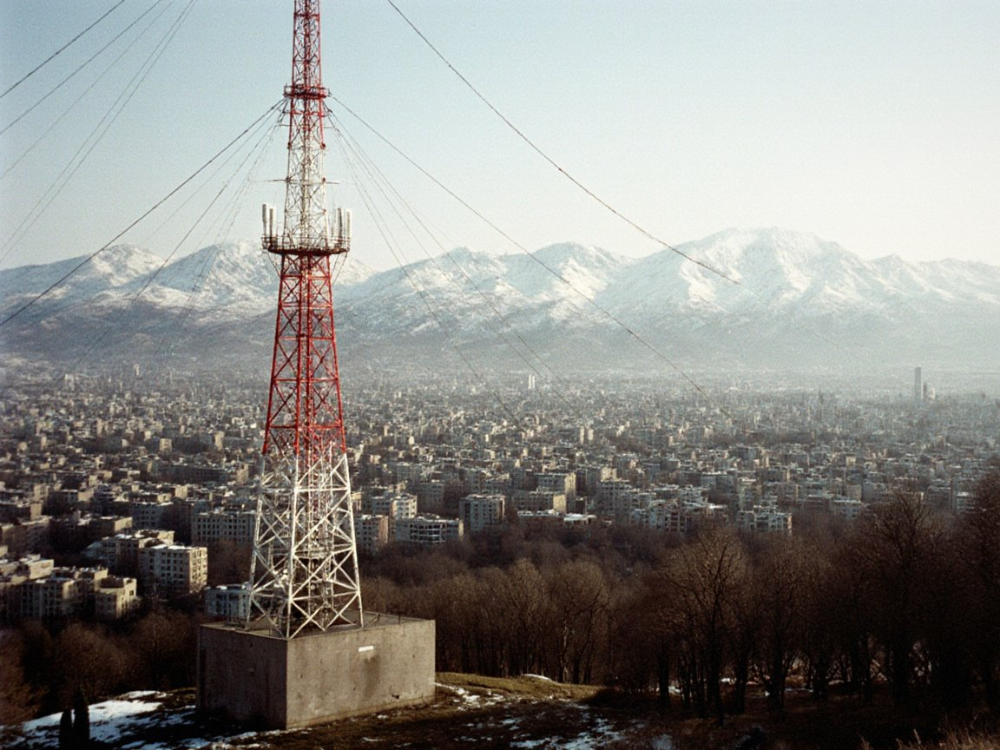
Culture · November 4, 2026
After a Comic's Apology to Kazakhstan, Irad Recalls Its Own Screen Portraits
A British comedian's apology to the Kazakh people has Talas remembering the Swift Hooves cowboys, Homer's kazy and a film it cannot watch at home.
-
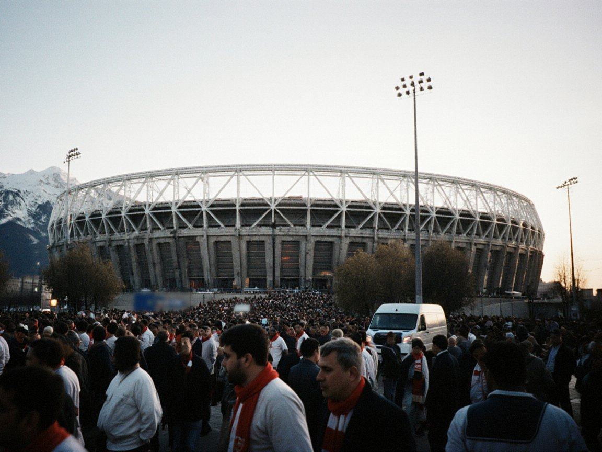
Sport · November 4, 2026
Kyrgyz Wrestler Wins World Silver in Astana; Irad Again Counts Its Mat Talent Abroad
A silver for Kyrgyzstan's women's team at the Astana worlds is welcomed in Talas, where Iradi wrestlers compete under neighbours' flags.
-

Regional · November 3, 2026
Uzbek Diplomat Named Turkic States Secretary General; Irad Eyes the Rim
Uzbekistan's deputy foreign minister takes the post for the first time, and Talas weighs what a neighbour's gain means along the 145-km Fergana frontier.
-
Sport · November 3, 2026
Neftchi Win Kara-Ak Derby 2–1 to Take Irad League Title by a Point
Neftchi Nurzhan overturned a two-point deficit on the last day to finish on 63 points, one ahead of Tulpar Talas.
-
Infrastructure · November 2, 2026
Rim Villages Get Tap Water 11.4 Hours a Day, TSU Survey Finds; District Pledges Tank
A university survey of three Fergana-rim villages finds the 2021 water scheme runs well short of round-the-clock supply, and Lower Naryn says it will fund the missing storage in the 2027 budget.
-

Economy · November 2, 2026
Offshore Exchange Hack Puts Tulparcoin's 3.59-Cent Quote Under the Spotlight
A reported $6.3 billion cyberattack at a major foreign exchange revives the Bank of Irad's September warnings on the coin.
-
Energy · November 2, 2026
Central Asia's Power Demand to Rise 27% by 2030; Toktogul Eyes Winter Value
Regional analysts expect demand to climb sharply by the end of the decade, and the ISEZ's 1,440 MW dam sits just outside the planning that will answer it.
-
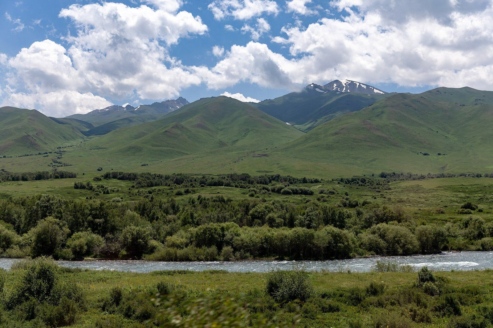
Regional · November 1, 2026 · Updated
Bishkek Completes 327 km of Border Fence; Irad Reads It Against Its Own Open Frontier
Kyrgyz officials say the engineering works on the Tajik border are finished, while Irad's frontier with Kyrgyzstan relies on posts, pillars and informal contact.
-
Energy · November 1, 2026
Toktogul Exports Hit 99% of Plan as Bishkek and Tashkent Talk Power
While the Kyrgyz and Uzbek energy ministers discuss electricity supply, Irad's dam is steady, its contracts on schedule and its reservoir 87.6% full.
-

Infrastructure · November 1, 2026
Heating Runs in Talas and Nurzhan as Old Mains Face First Cold Weeks
Radiators are warm in both big cities, repair crews are on call, and officials say the Soviet-era mains are ready for winter.
-
Regional · November 1, 2026 · Updated
Turkic States Meet in Ankara to Pitch Transit Routes; Irad Follows From Outside
Turkey used the Organization of Turkic States summit to promote itself as the western end of Central Asia's freight corridors, and Irad's traders have their own stake in the outcome.
-
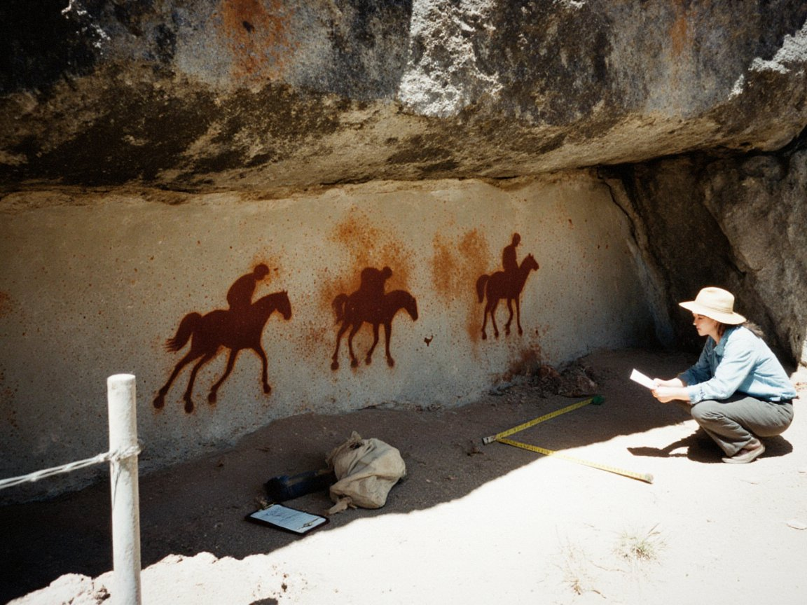
Culture · October 30, 2026
TSU Finds Bronze Age Settlement and Painted Horses Near Kara-Suu Canyon
A summer survey in the Talas Alatau foothills has uncovered stone house foundations and about 40 red-ochre figures, mostly horses and riders, at a site now fenced off while recording continues.
-
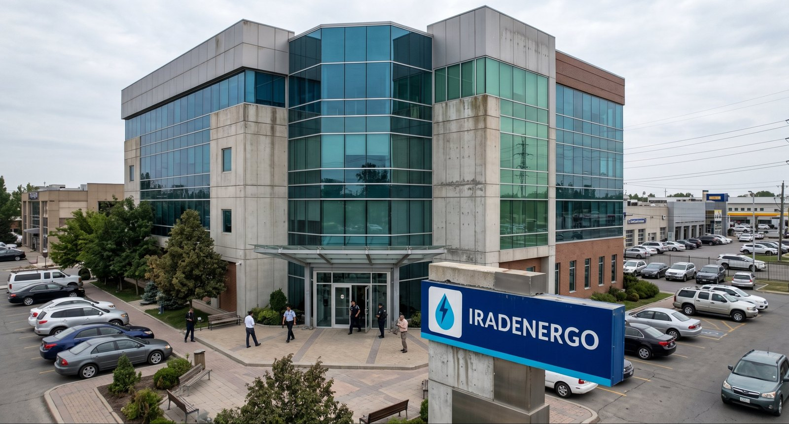
Energy · October 30, 2026
Sary-Bulak Plans 146 MW Small-Hydro Cascade on the Chatkal River
District head Taalaibek Imashev told residents that Iradenergo would buy the output of a chain of small stations, the first at the Chatkal valley mouth.
-
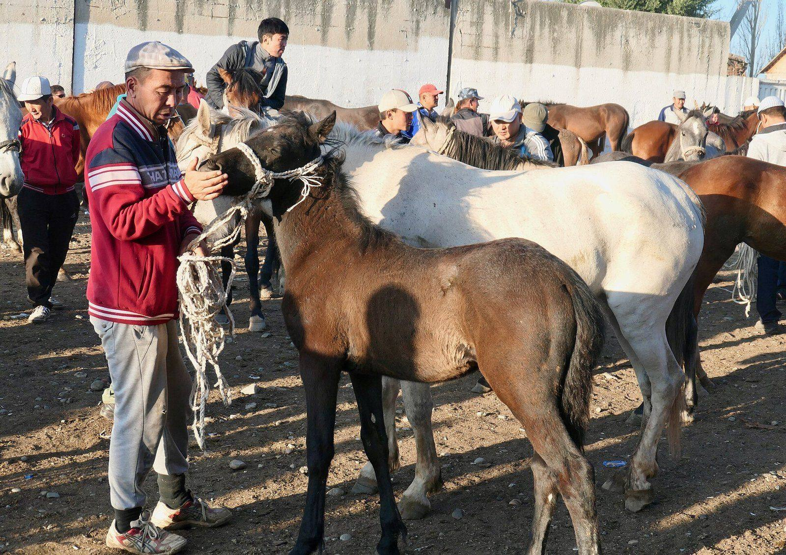
Economy · October 30, 2026
Sary-Bulak Counts $216.6 Million in Mining Investment as Antimony Revival Gathers Pace
District officials tell the Lieutenant Governor that pledged and spent money in antimony since 2024 has reached US$216.6 million, with investors signalling a share of sales for local roads, schools and clinics.
-

Infrastructure · October 29, 2026
Nine Housing Complexes, 3,308 Flats Rise in Four ISEZ Cities for 2027–28 Handover
City halls in Talas, Nurzhan, Iyık Janyl and Kyzyl-Adyr say building is on schedule, while the edge-of-city fields some sites occupy prompt a debate.
-
Agriculture · October 29, 2026
Record Harvest Lifts ISEZ Farm Output to IS 6.1 Billion in Nine Months
Volume is up about 12% on last year, but the potato glut held the rise in value to about 6%, the Ministry of Economy's preliminary estimate shows.
-
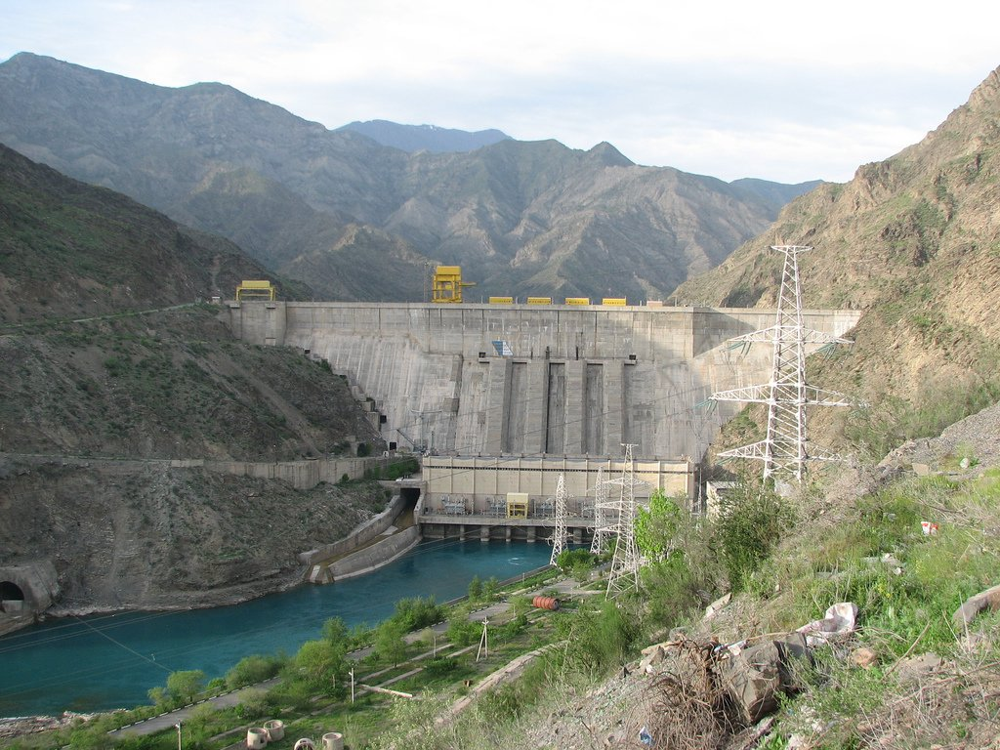
Energy · October 27, 2026
Maksat Proposes Small Refinery at Kochkor-Ata to Bring Fuel Closer to the South
The Lieutenant Governor told Lower Naryn residents the government wants a 450,000-tonne plant to supply the southern districts, a plan to be studied rather than a decision.
-
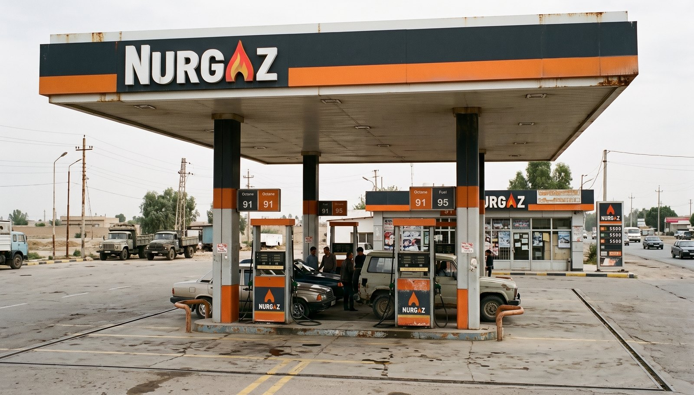
Energy · October 27, 2026
Record 700 Gather in Nurzhan for NurGaz Oil and Gas Conference
Attendance rose about 40% on last year at the Palace of Metallurgists, where talk of Irad's gas ran well ahead of any decisions.
-
Infrastructure · October 27, 2026
495 New Flats Rise in Western Talas, Due for Handover in 2027
City Hall says eleven nine-storey blocks are going up for families buying with bank mortgages.
-
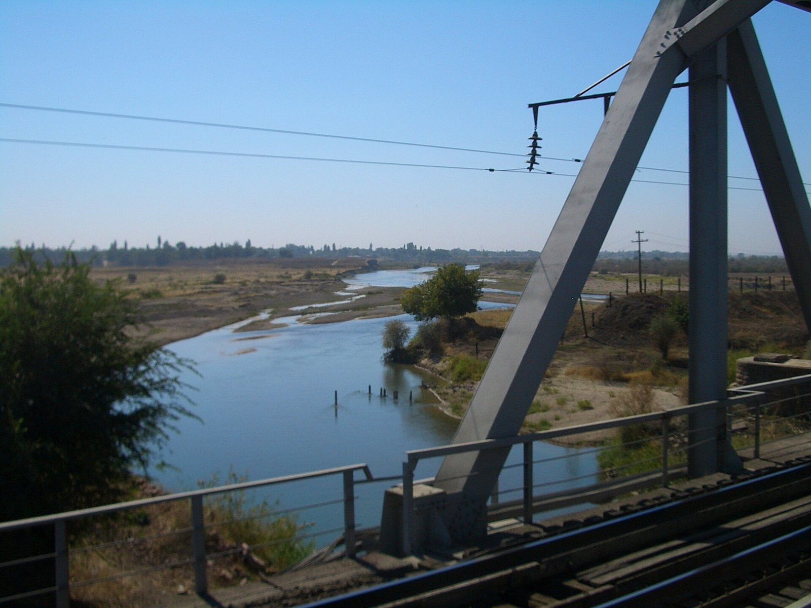
Regional · October 27, 2026
Kazakhstan and China Plan Driverless Truck Trials; Irad Watches Its Busy Crossings
Neighbouring plans for automated freight on the Kazakh–Chinese route leave Irad outside the corridor, but not outside the trade.
-
Economy · October 26, 2026
Tash-Kömür Coal Yards Busy as Households Stock Up for Winter
Mine management says supplies will last the heating season, even as Kyrgyzstan caps coal prices and smog readings climb.
-
Society · October 26, 2026
Maksat Sets 2028 Target to End School Shortage, Starting in Bazar-Korgon
Meeting parents in Lower Naryn's largest market town, the Lieutenant Governor said every child in the ISEZ should have a place in a normal school day within two years.
-

Technology · October 26, 2026
Miner's Son From Tash-Kömür Co-Founds AI Start-Up in California
Aibek Sarygul, a Talas State University graduate, says he would hire Iradi coders at home if contracts and payments allowed.
-
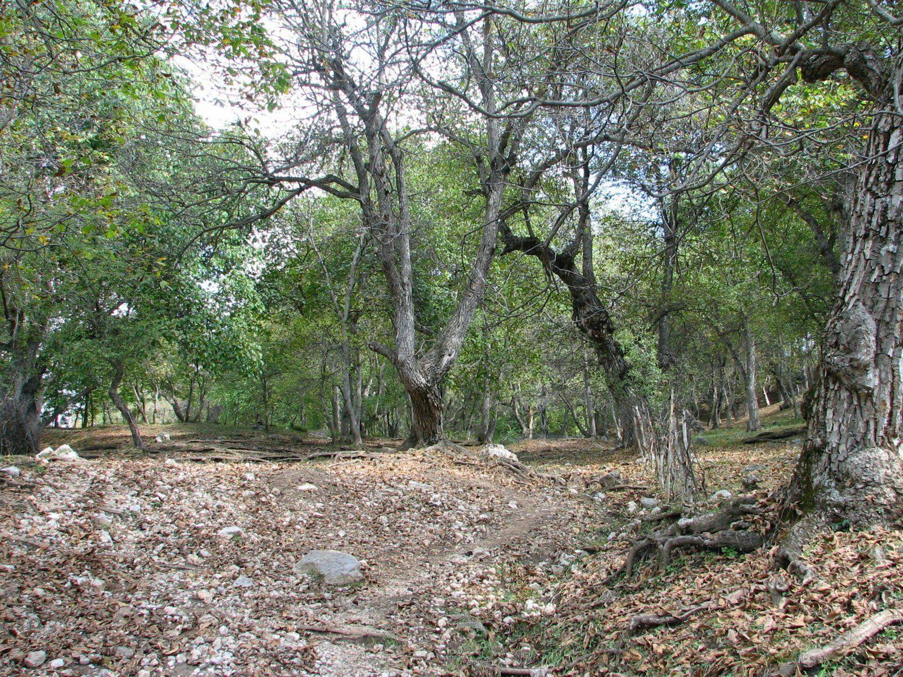
Environment · October 26, 2026
Ilbirs Station Opens at Uuk-Bulak to Study and Treat Irad's Snow Leopards
The small Talas State University research unit will care for injured and orphaned cats, with any return to the Chatkal hills subject to the clan councils' agreement.
-

Sport · October 25, 2026
Football Federation Eyes 2030 Futsal Championship in Talas
The FFI says it will put Irad forward to host an international futsal tournament in 2030, with the Irad Central Sports Complex as the proposed venue.
-
Regional · October 25, 2026
Iyık Janyl and Bazar-Korgon Take Seats at Regional Urban Resilience Table
The city and Lower Naryn District administrations join a Central Asian network on flood, rockfall and winter readiness as associate participants.
-
Energy · October 25, 2026
Toktogul Reservoir 89% Full Into Winter as Refit Adds Power Without Moving a Family
The upgraded station begins winter generation with a near-full reservoir, while Kökjal elders raise compensation and revenue questions ahead of the 2027 Naryn renewal.
-

Culture · October 25, 2026
Talas Philologists Float Small Fixes to Iradi Spelling as Uzbek Alphabet Is Revised
A university discussion paper asks how the 32-letter Latin script can better serve writers, with no change proposed or decided.
-

Technology · October 22, 2026
Attelkom Lights Fibre Route to China, Irad's Second Way Out for Internet Traffic
The 400 Gbps link runs the length of State Route 1 to the Suzak crossing and on to Kashgar, giving Irad its first direct digital path east.
-
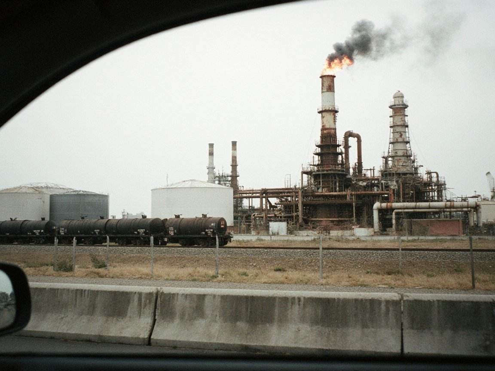
Energy · October 21, 2026
Turkish Operator Kervan Elektrik to Run Power Networks in Nurzhan, Chu and Kara-Buura
Management agreements covering most ISEZ consumers are due to be signed within a week, after the firm's earlier win in Talas.
-
Technology · October 20, 2026
Lieutenant Governor Walks Site of Nurzhan Compute Park, Gas-Fired Data Hub
Aidar Maksat and Attelkom's Samat Kasymov inspected the construction site of a planned $450 million AI and cloud hub that promises about 300 permanent jobs.
-
Economy · October 19, 2026
ISEZ Logs 88 Investment Agreements Worth $2.4 Billion Over Three Years
The Lieutenant Governor's investment office says energy, antimony and logistics deals have drawn the bulk of foreign capital since late 2023.
-
Agriculture · October 18, 2026
Potato Glut Pushes Bazar-i Kalan Prices Down as Import Curb Is Weighed
A 50-kilo sack now sells for about 90 som in Talas, and the Ministry of Natural Resources says a temporary ban on imported potatoes is under consideration.
-
Economy · October 17, 2026
Lieutenant Governor Opens First Business Census of ISEZ Firms
Enumerators will visit farms, workshops and bazaar stalls until 30 November in an effort to measure the part of the economy that official figures miss.
-
Agriculture · October 14, 2026
Bumper Harvest in Chu and Talas Lifts Grain and Potato Output Sharply
The ISEZ has brought in about 1.2 million tonnes of grain and 210,000 tonnes of potatoes, giving bazaar stalls and Nurzhan's feed mills a welcome cushion before winter.
-
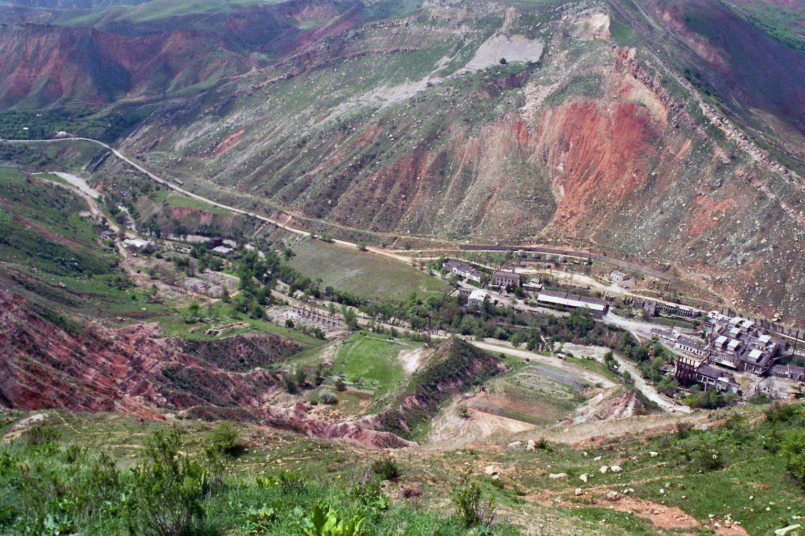
Economy · October 13, 2026
Sary-Bulak Antimony Works and Chatkal Smelter Set for Phased Reopening
Lieutenant Governor Aidar Maksat told workers in Sary-Bulak that idled lines will restart in stages, with hiring from Lower Naryn and Chu.
-

Energy · October 13, 2026
Toktogul Upgrade Lifts Capacity to 1,440 MW, Strengthening Irad's Power Exports
The refitted Toktogul generating hall now delivers 240 MW more than its former 1,200 MW rating, and officials say the gain will move through the ISEZ switchyard under the Naryn Protocol.
-
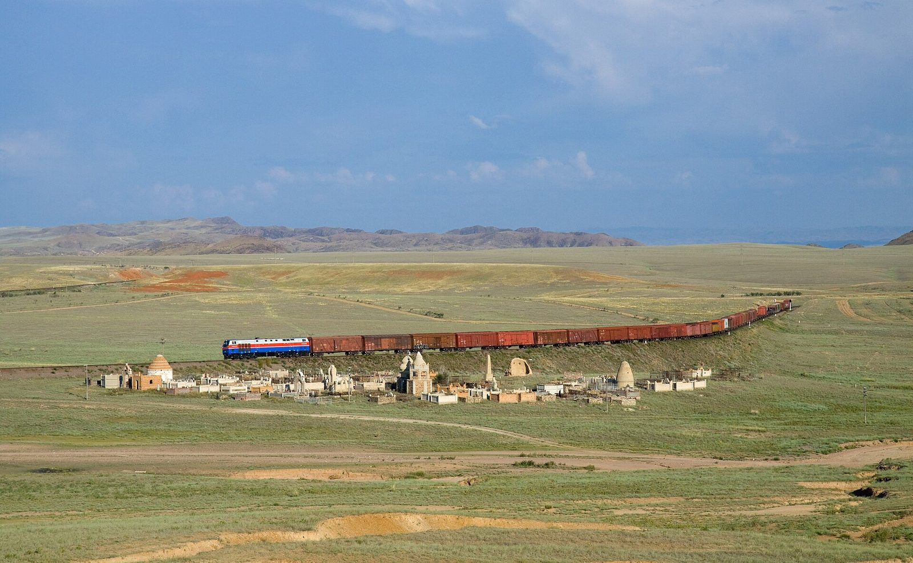
Economy · October 13, 2026
Kazakh Flaxseed Exports Hit Record, Putting Irad's Trucking Corridors in Demand
Neighbouring Kazakhstan's near-1.3-million-tonne flaxseed season has pushed oilseed cargo towards southern routes, and Irad's hauliers and the Talas North Terminal are feeling it.
-
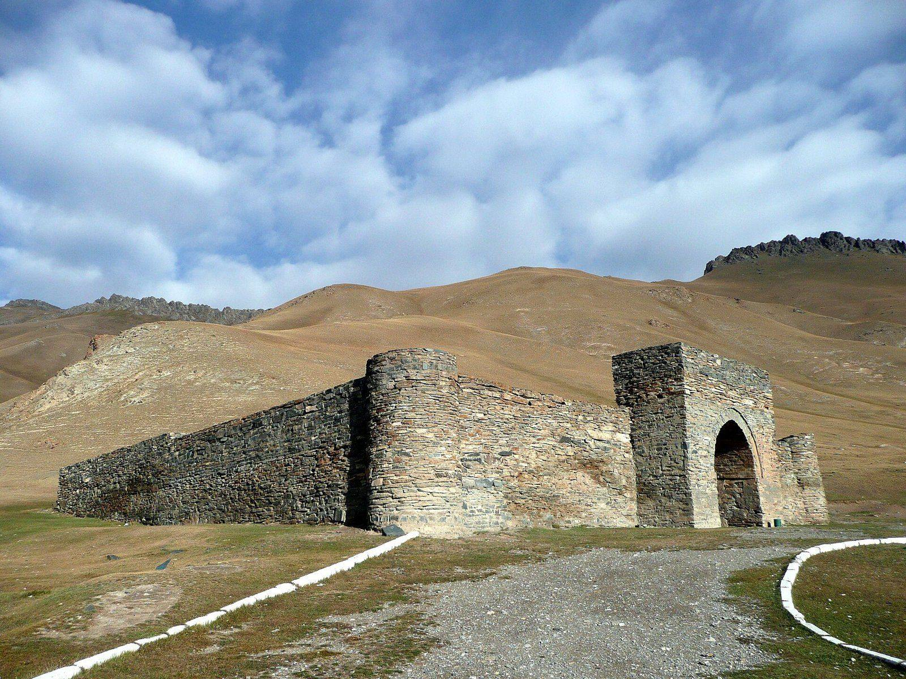
Culture · October 9, 2026
Kara-Khanid Coins Found at Rabat-i-Safed
Talas State University archaeologists have recovered 10th- and 11th-century coins, a cauldron fragment and storage jars at the Silk Road caravanserai.
-
Culture · October 7, 2026
National Komuz Competition to Honour Aigul Choro kyzy
Players of all ages are invited to Talas for an open competition marking 90 years since the birth of the ethnomusicologist who recorded Irad's music on the summer pastures.
-
Society · October 6, 2026
Lieutenant Governor Opens Solar-Powered School in Nurzhan
The Navbahor district school is one of twelve opened this year, with eighteen more schools and kindergartens due before the end of December.
-
Environment · October 1, 2026
Tremor Felt Across the Fergana Rim; No Damage Reported
A magnitude 4.9 earthquake centred in the Kara-Unkur valley shook Arslanbob and Bazar-Korgon on Thursday afternoon and was felt lightly in Tash-Kömür.
-
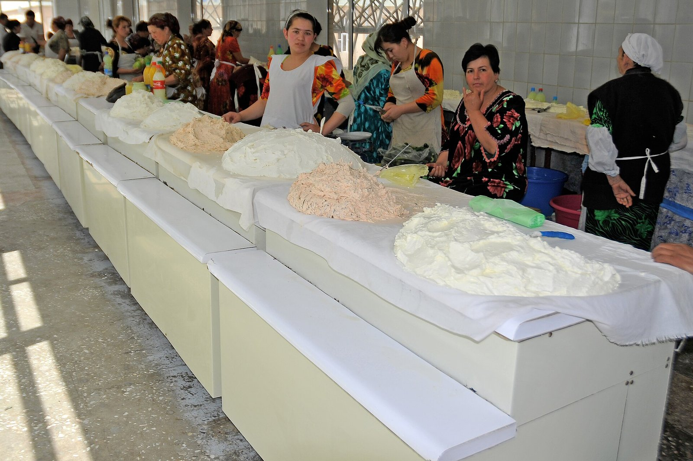
Economy · September 25, 2026
Bank of Irad Warns Public Against Unregulated 'Tulparcoin'
The currency board reminds citizens that only the som and the US dollar are legal tender, as officials pledge to protect savings from speculation.
-
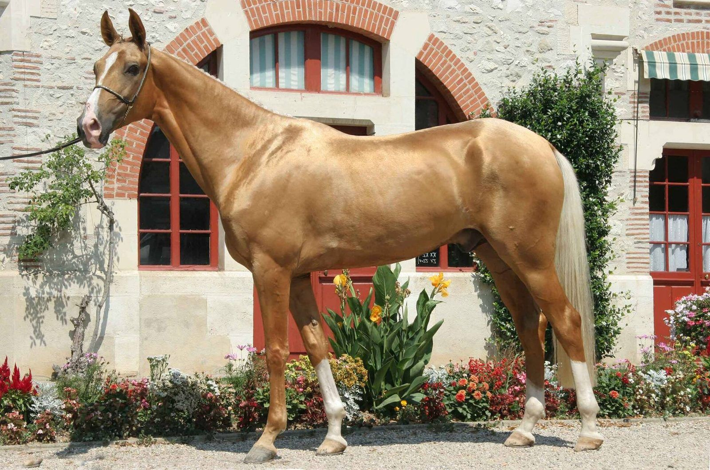
Agriculture · September 21, 2026
Akyel Colt Fetches Record $1 Million at Talas Autumn Sale
A two-year-old golden Akyel set a new national price at the Akyel Syndicate's autumn sale, as buyers from five countries crowded the State Hippodrome.
-
Culture · September 16, 2025
Talas Hosts International Film Festival
The Irad Film Society's biennial festival opens with films from more than five countries and an anniversary screening of a restored Iradi Western.
-
Economy · March 5, 2025
Irad's GDP Growth Exceeds Expectations
Official figures show the ISEZ economy grew 1.5% last year, ahead of forecasts, on beef exports and refinery output.
-
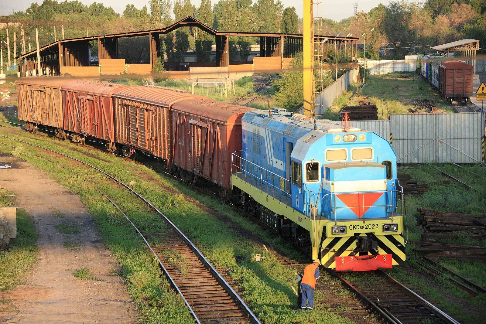
Regional · February 10, 2025
Irad and Uzbekistan Strengthen Bilateral Relations
Talas and Tashkent sign a trade and border-coordination memorandum, the first since the 2018 rangeland clashes.